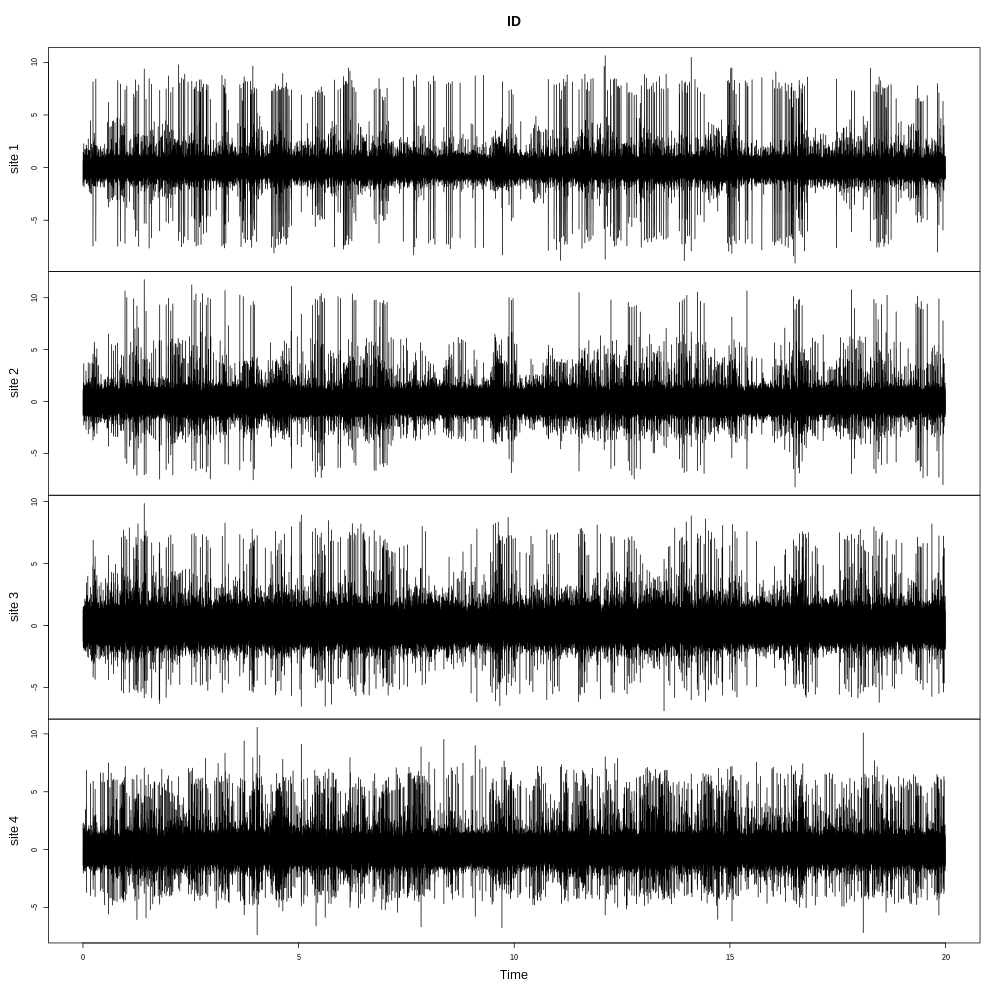
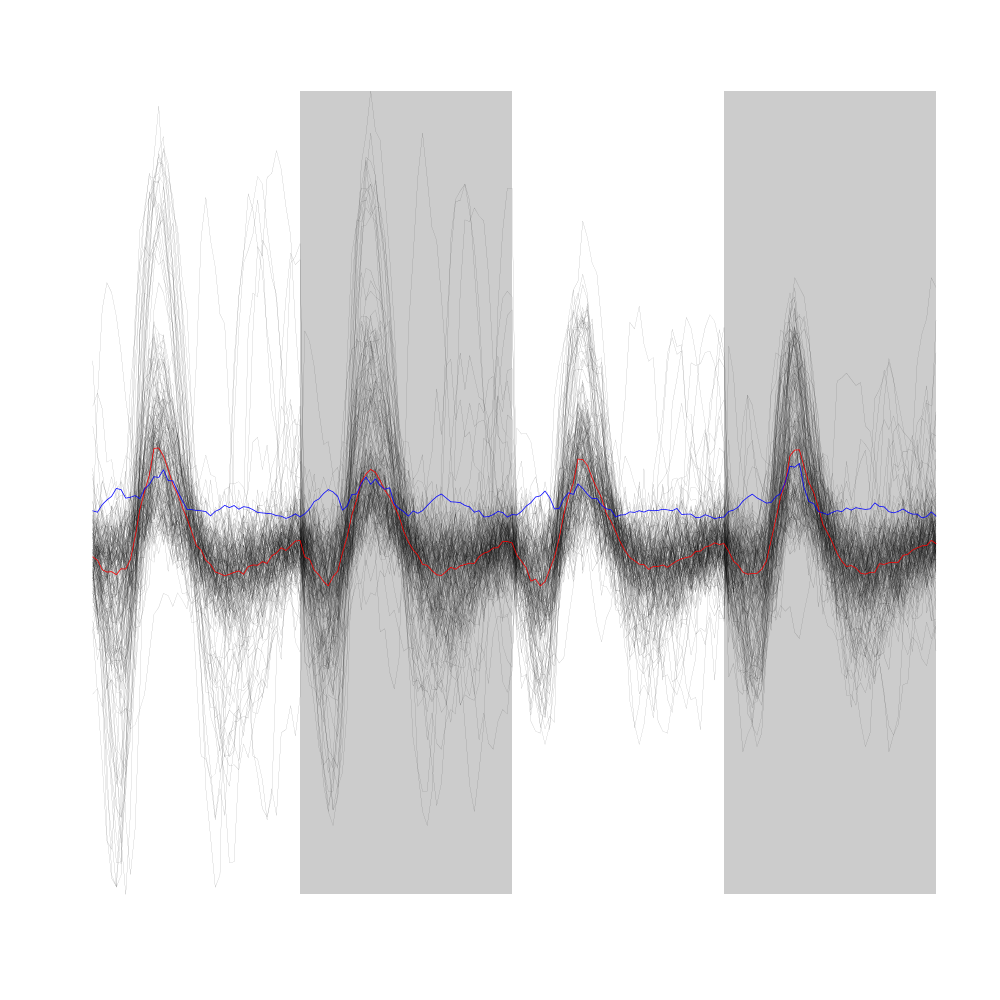

Analysis of Locust Data Set
Table of Contents
1 How to proceed?
The locust data set is located at the following web site: http://xtof.disque.math.cnrs.fr/data. So you should start by dowloading the four file Locust_x.tar.gz (where x = 1, 2, 3, 4) in some directory where you will perform your analysis (see second sub-section).
1.1 Loading the script file
We start by loading file sorting.R containing the sorting specific functions from the web. These functions will soon be organized as a "proper" R package. The URL of the file is https://raw.github.com/christophe-pouzat/Neuronal-spike-sorting/master/code/sorting.R (now hosted on GitHub) so the loading is done by dowloading the source file first from its url:
to a file named, guess what:
using function download.file setting the optional argument method to wget since we are downloading from an https:
download.file(url="https://raw.github.com/christophe-pouzat/Neuronal-spike-sorting/master/code/sorting.R",destfile="sorting.R",method="wget")
The functions defined in the file can then be made accessible from the R workspace – assuming that R has been started from the directory where the previous download took place – with the following R command:
source("sorting.R")
1.2 Loading the data
The data are simply loaded, once we know where to find them and if we do not forget that they have been compressed with gzip. The data are stored with one file per recording channel in double format. They were sampled at 15 kHz and there is 20 s of them. Since they are compressed, we cannot read them directly into R from the depository nd we must download them first:
reposName <-"http://xtof.disque.math.cnrs.fr/data/"
dN <- paste("Locust_",1:4,".dat.gz",sep="")
sapply(1:4, function(i)
download.file(paste(reposName,dN[i],sep=""),
dN[i],mode="wb")
)
Once the data are in our working directory we can load them into our R workspace:
nb <- 20*15000
lD <- sapply(dN,
function(n) {
mC <- gzfile(n,open="rb")
x <- readBin(mC,what="double",n=nb)
close(mC);x
}
)
colnames(lD) <- paste("site",1:4)
We can check that our lD object has the correct dimension:
dim(lD)
[1] 300000 4
2 Preliminary Analysis
We are going to start our analysis by some "sanity checks" to make sure that nothing "weird" happened during the recording.
2.1 Five number summary
We should start by getting an overall picture of the data like the one provided by the summary method of R which outputs a 5 numbers plus mean summary. The five numbers are the minimum, the first quartile, the median, the third quartile and the maximum:
summary(lD,digits=2)
site 1 site 2 site 3 site 4
Min. :-9.074 Min. :-8.229 Min. :-6.890 Min. :-7.35
1st Qu.:-0.371 1st Qu.:-0.450 1st Qu.:-0.530 1st Qu.:-0.49
Median :-0.029 Median :-0.036 Median :-0.042 Median :-0.04
Mean : 0.000 Mean : 0.000 Mean : 0.000 Mean : 0.00
3rd Qu.: 0.326 3rd Qu.: 0.396 3rd Qu.: 0.469 3rd Qu.: 0.43
Max. :10.626 Max. :11.742 Max. : 9.849 Max. :10.56
We see that the data range (maximum - minimum) is similar (close to 20) on the four recording sites. The inter-quartiles ranges are also similar.
2.2 Were the data normalized?
We can check next if some processing like a division by the standard deviation (SD) has been applied:
apply(lD,2,sd)
site 1 site 2 site 3 site 4
1 1 1 1
2.3 Discretization step amplitude
We clearly see that these data have been scaled, that is, normalized to have an SD of 1. Since the data have been digitized we can easily obtain the apparent size of the digitization set:
apply(lD,2, function(x) min(diff(sort(unique(x)))))
site 1 site 2 site 3 site 4
0.006709845 0.009194500 0.011888433 0.009614042
2.4 Detecting saturation
Before embarking into a comprehensive analysis of data that we did not record ourselves (of that we recorded so long ago that we do not remember any "remarkable" event concerning them), it can be wise to check that no amplifier or A/D card saturation occurred. We can quickly check for that by looking at the length of the longuest segment of constant value. When saturation occurs the recorded value stays for many sampling points at the same upper or lower saturating level.
ndL <- lapply(1:4,function(i) cstValueSgts(lD[,i])) sapply(ndL, function(l) max(l[2,]))
[1] 2 2 2 2
We see that for each recording site, the longest segment of constant value is two sampling points long, that is 2/15 ms. There is no ground to worry about saturation here.
2.5 Plot the data
We are going to profit from the time series (ts and mts for multiple time series) objects of R by redefining our lD matrix as:
lD <- ts(lD,start=0,freq=15e3)
It is then straightforward to plot the whole data set:
plot(lD)

The whole (20 s) locust data set.
It is also good to "zoom in" and look at the data with a finer time scale:
plot(window(lD,start=0,end=0.2))
First 200 ms of the locust data set.
3 Data renormalization
We are going to use a median absolute deviation (MAD) based renormalization. The goal of the procedure is to scale the raw data such that the noise SD is approximately 1. Since it is not straightforward to obtain a noise SD on data where both signal (i.e., spikes) and noise are present, we use this robust type of statistic for the SD. Luckily this is simply obtained in R:
lD.mad <- apply(lD,2,mad) lD <- t(t(lD)/lD.mad) lD <- ts(lD,start=0,freq=15e3)
where the last line of code ensures that lD is still an mts object. We can check on a plot how MAD and SD compare:
plot(window(lD[,1],0,0.2)) abline(h=c(-1,1),col=2) abline(h=c(-1,1)*sd(lD[,1]),col=4,lty=2,lwd=2)
First 200 ms on site 1 of the locust data set. In red: +/- the MAD; in dashed blue +/- the SD.
3.1 A quick check that the MAD "does its job"
We can check that the MAD does its job as a robust estimate of the noise standard deviation by looking at Q-Q plots of the whole traces normalized with the MAD and normalized with the "classical" SD.
lDQ <- apply(lD,2,quantile, probs=seq(0.01,0.99,0.01))
lDnormSD <- apply(lD,2,function(x) x/sd(x))
lDnormSDQ <- apply(lDnormSD,2,quantile, probs=seq(0.01,0.99,0.01))
qq <- qnorm(seq(0.01,0.99,0.01))
matplot(qq,lDQ,type="n",xlab="Normal quantiles",ylab="Empirical quantiles")
abline(0,1,col="grey70",lwd=3)
col=c("black","orange","blue","red")
matlines(qq,lDnormSDQ,lty=2,col=col)
matlines(qq,lDQ,lty=1,col=col)
rm(lDnormSD,lDnormSDQ)
Performances of MAD based vs SD based normalizations. After normalizing the data of each recording site by its MAD (plain colored curves) or its SD (dashed colored curves), Q-Q plot against a standard normal distribution were constructed. Colors: site 1, black; site 2, orange; site 3, blue; site 4, red.
We see that the behavior of the "away from normal" fraction is much more homogeneous for small, as well as for large in fact, quantile values with the MAD normalized traces than with the SD normalized ones. If we consider automatic rules like the three sigmas we are going to reject fewer events (i.e., get fewer putative spikes) with the SD based normalization than with the MAD based one.
4 Interactive data exploration
Although we can't illustrate properly this key step on a "static" document it is absolutely necessary to look at the data in detail using:
explore(lD)
Upon using this command the user is invited to move forward (typing "n" + RETURN or simply RETURN), backward (typing "f" + RETURN), to change the abscissa or ordinate scale, etc.
5 Spike detection
We are going to filter the data slightly using a "box" filter of length 3. That is, the data points of the original trace are going to be replaced by the average of themselves with their two nearest neighbors. We will then scale the filtered traces such that the MAD is one on each recording sites and keep only the parts of the signal which above 4:
lDf <- filter(lD,rep(1,3)/3) lDf.mad <- apply(lDf,2,mad,na.rm=TRUE) lDf <- t(t(lDf)/lDf.mad) thrs <- c(4,4,4,4) bellow.thrs <- t(t(lDf) < thrs) lDfr <- lDf lDfr[bellow.thrs] <- 0 remove(lDf)
We can see the difference between the raw trace and the filtered and rectified one on which spikes are going to be detected with:
plot(window(lD[,1],0,0.2)) abline(h=4,col=4,lty=2,lwd=2) lines(window(ts(lDfr[,1],start=0,freq=15e3),0,0.2),col=2)
First 200 ms on site 1 of data set lD. The raw data are shown in black, the detection threshold appears in dashed blue and the filtered and rectified trace on which spike detection is going to be preformed appears in red.
Spikes are then detected as local maxima on the summed, filtered and rectified traces:
sp1 <- peaks(apply(lDfr,1,sum),15)
The returned object, sp1, is essentially a vector of integer containing the indexes of the detected spikes. To facilitate handling it is in addition defined as an object of class eventsPos meaning that entering its name on the command line and typing returns, that is, calling the print method on the object gives a short description of it:
sp1
eventsPos object with indexes of 1769 events. Mean inter event interval: 169.45 sampling points, corresponding SD: 150.2 sampling points Smallest and largest inter event intervals: 9 and 1453 sampling points.
We see that 1769 events were detected. Since the mean inter event interval is very close to the SD, the "compound process" (since it's likely to be the sum of the activities of many neurons) is essentially Poisson.
5.1 Interactive spike detection check
We can interactively check the detection quality with:
explore(sp1,lD,col=c("black","grey50"))
That leads to a display very similar to the one previously obtained with explore(lD) except that the detected events appear superposed on the raw data as red dots.
5.2 Remove useless objects
Since we are not going to use lDfr anymore we can save memory by removing it:
remove(lDfr)
5.3 Data set split
In order to get stronger checks for our procedure and to illustrate better how it works, we are going to split our data set in two parts, establish our model on the first and use this model on both parts:
(sp1E <- as.eventsPos(sp1[sp1 <= dim(lD)[1]/2])) (sp1L <- as.eventsPos(sp1[sp1 > dim(lD)[1]/2]))
eventsPos object with indexes of 892 events. Mean inter event interval: 167.84 sampling points, corresponding SD: 146.92 sampling points Smallest and largest inter event intervals: 10 and 1180 sampling points. eventsPos object with indexes of 877 events. Mean inter event interval: 171.01 sampling points, corresponding SD: 153.6 sampling points Smallest and largest inter event intervals: 9 and 1453 sampling points.
We see that eventsPos objects can be sub-set like classical vectors. We also see that the sub-setting based on total time results in set with roughly the same number of events.
6 Cuts
6.1 Getting the "right" length for the cuts
After detecting our spikes, we must make our cuts in order to create our events' sample. That is, for each detected event we literally cut a piece of data and we do that on the four recording sites. To this end we use function mkEvents which in addition to an eventPos argument (sp1E) and a "raw data" argument (lD) takes an integer argument (before) stating how many sampling points we want to keep within the cut before the reference time as well as another integer argument (after) stating how many sampling points we want to keep within the cut after the reference time. The function returns essentially a matrix where each event is a column. The cuts on the different recording sites are put one after the other when the event is built. The obvious question we must first address is: How long should our cuts be? The pragmatic way to get an answer is:
- Make cuts much longer than what we think is necessary, like 50 sampling points on both sides of the detected event's time.
- Compute robust estimates of the "central" event (with the
median) and of the dispersion of the sample around this central event (with theMAD). - Plot the two together and check when does the
MADtrace reach the background noise level (at 1 since we have normalized the data). - Having the central event allows us to see if it outlasts significantly the region where the
MADis above the background noise level.
Clearly cutting beyond the time at which the MAD hits back the noise level should not bring any useful information as far a classifying the spikes is concerned. So here we perform this task as follows:
evtsE <- mkEvents(sp1E,lD,49,50) evtsE.med <- median(evtsE) evtsE.mad <- apply(evtsE,1,mad)
plot(evtsE.med,type="n",ylab="Amplitude") abline(v=seq(0,400,10),col="grey") abline(h=c(0,1),col="grey") lines(evtsE.med,lwd=2) lines(evtsE.mad,col=2,lwd=2)
Robust estimates of the central event (black) and of the sample's dispersion around the central event (red) obtained with "long" (100 sampling points) cuts. We see clearly that the dispersion is back to noise level 15 points before the peak and 30 points after the peak (on all sites). We also see that the median event is not back to zero 50 points after the peak, we will have to keep his information in mind when we are going to look for superpositions.
6.2 Events
Once we are satisfied with our spike detection, at least in a provisory way, and that we have decided on the length of our cuts, we proceed by making cuts around the detected events. :
evtsE <- mkEvents(sp1E,lD,14,30)
Here we have decided to keep 14 points before and 30 points after our reference times. evtsE is a bit more than a matrix, it is an object of class events, meaning that a summary method is available:
summary(evtsE)
events object deriving from data set: lD. Events defined as cuts of 45 sampling points on each of the 4 recording sites. The 'reference' time of each event is located at point 15 of the cut. There are 892 events in the object.
A print method which calls the plot method is also available giving:
evtsE[,1:200]

First 200 events of evtsE. Cuts from the four recording sites appear one after the other. The background (white / grey) changes with the site. In red, robust estimate of the "central" event obtained by computing the pointwise median. In blue, robust estimate of the scale (SD) obtained by computing the pointwise MAD.
Like eventsPos objects, events objects can be sub-set with respect to the rows like usual matrix. Notice that a rather sophisticated plot was obtained with an extremely simple command… The beauty of R class / method mechanism in action.
6.3 Noise
Getting an estimate of the noise statistical properties is an essential ingredient to build respectable goodness of fit tests. In our approach "noise events" are essentially anything that is not an "event" is the sense of the previous section. I wrote essentially and not exactly since there is a little twist here which is the minimal distance we are willing to accept between the reference time of a noise event and the reference time of the last preceding and of the first following "event". We could think that keeping a cut length on each side would be enough. That would indeed be the case if all events were starting from and returning to zero within a cut. But this is not the case with the cuts parameters we tool previously (that will become clear soon). You might wonder why we chose so short a cut length then. Simply to avoid having to deal with too many superposed events which are the really bothering events for anyone wanting to do proper sorting.
To obtain our noise events we are going to use function mkNoise which takes the same arguments as function mkEvents plus two number: safetyFactor a number by which the cut length is multiplied and which sets the minimal distance between the reference times discussed in the previous paragraph and size the maximal number of noise events one wants to cut (the actual number obtained might be smaller depending on the data length, the cut length, the safety factor and the number of events).
We cut next noise events with a rather large safety factor:
noiseE <- mkNoise(sp1E,lD,14,30,safetyFactor=2.5,2000)
Here noiseE is also an events object and its summary is:
summary(noiseE)
events object deriving from data set: lD. Events defined as cuts of 45 sampling points on each of the 4 recording sites. The 'reference' time of each event is located at point 15 of the cut. There are 1375 events in the object.
The reader interested in checking the effect of the safetyFactor argument is invited to try something like:
noiseElowSF <- mkNoise(sp1E,lD,14,30,safetyFactor=1,2000) plot(mean(noiseElowSF),type="l") lines(mean(noiseE),col=2)
7 First jitter cancellation
Since the "reference times" of our events are their detected peaks, we expect that due to both recording noise and sampling the actual event's peak will be off the apparent one. We are therefore going to realign our events on a robust estimate of the "central event", the pointwise events median (the red trace on our previous events figure), before going for the clustering stage. We can perform a quick alignment using a second order Taylor expansion around the central event:
{kind=link}
evtsEo2 <- alignWithProcrustes(sp1E,lD,14,30,maxIt=1,plot=FALSE) summary(evtsEo2)
events object deriving from data set: lD. Events defined as cuts of 45 sampling points on each of the 4 recording sites. The 'reference' time of each event is located at point 15 of the cut. Events were realigned on median event. There are 892 events in the object.
We see that a new line appeared in the summary of our resulting events object. This line, the one before the last, states that the events were realigned.
8 Getting "clean" events
Our spike sorting has two main stages, the first one consist in estimating a generative model and the second one consists in using this model to build a classifier before applying to the data. Our generative model will include superposed events but it is going to be built out of reasonably "clean" ones. Here by clean we mean events which are not due to a nearly simultaneous firing of two or more neurons; and simultaneity is defined on the time scale of one of our cuts.
In order to eliminate the most obvious superpositions we are going to use a rather brute force approach, looking at the sides of the central peak of our median event and checking if individual events are not too large there, that is do not exhibit extra peaks. We first define a function doing this job:
goodEvtsFct <- function(samp,thr=3) {
samp.med <- apply(samp,1,median)
samp.mad <- apply(samp,1,mad)
above <- samp.med > 0
samp.r <- apply(samp,2,function(x) {x[above] <- 0;x})
apply(samp.r,2,function(x) all(x<samp.med+thr*samp.mad))
}
We then apply our new function to our realigned sample:
goodEvts <- goodEvtsFct(evtsEo2,8)
Here goodEvts is a vector of logical with as many elements as events in evtsEo2. Elements of goodEvts are TRUE if the corresponding event of evtsEo2 is "good" (i.e., not a superposition) and is FALSE otherwise. We can look at the first 200 good events easily with:
evtsEo2[,goodEvts][,1:200]
We see that few superpositions are left but the most obvious ones of our previous events figure are gone. We can also look at the [1] 46 "bad" events with:
evtsEo2[,!goodEvts]
9 Dimension reduction
9.1 Principal component analysis
Our events are living right now in an 180 dimensional space (our cuts are 45 sampling points long and we are working with 4 recording sites simultaneously). It turns out that it hard for most humans to perceive structures in such spaces. It also hard, not to say impossible with a realistic sample size, to estimate probability densities (which what some clustering algorithm are actually doing) in such spaces, unless one is ready to make strong assumptions about these densities. It is therefore usually a good practice to try to reduce the dimension of the sample space used to represent the data. We are going to that with principal component analysis (PCA), using it on our "good" events.
evtsE.pc <- prcomp(t(evtsEo2[,goodEvts]))
We have to be careful here since function prcomp assumes that the data matrix is built by stacking the events / observations as rows and not as columns like we did in our events object. We apply therefore the function to the transpose (t()) of our events.
9.2 Exploring PCA results
PCA is a rather abstract procedure to most of its users, at least when they start using it. But one way to grasp what it does is to plot the mean event plus or minus, say twice, each principal components like:
layout(matrix(1:4,nr=2)) explore(evtsE.pc,1,5) explore(evtsE.pc,2,5) explore(evtsE.pc,3,5) explore(evtsE.pc,4,5)

First 200 good events of evtsEo2. Bad events of evtsEo2. PCA of evtsEo2 (for "good" events) exploration (PC 1 to 4). Each of the 4 graphs shows the mean waveform (black), the mean waveform + 5 x PC (red), the mean - 5 x PC (blue) for each of the first 4 PCs. The fraction of the total variance "explained" by the component appears in between parenthesis in the title of each graph.
We can see that the first 3 PCs correspond to pure amplitude variations. An event with a large projection (score) on the first PC is smaller than the average event on recording sites 1, 2 and 3, but not on 4. An event with a large projection on PC 2 is larger than average on site 1, smaller than average on site 2 and 3 and identical to the average on site 4. An event with a large projection on PC 3 is larger than the average on site 4 only. PC 4 is the first principal component corresponding to a change in shape as opposed to amplitude. A large projection on PC 4 means that the event as a shallower first valley and a deeper second valley than the average event on all recording sites.
We now look at the next 4 principal components:
layout(matrix(1:4,nr=2)) explore(evtsE.pc,5,5) explore(evtsE.pc,6,5) explore(evtsE.pc,7,5) explore(evtsE.pc,8,5)
PCA of evtsEo2 (for "good" events) exploration (PC 5 to 8). Each of the 4 graphs shows the mean waveform (black), the mean waveform + 5 x PC (red), the mean - 5 x PC (blue). The fraction of the total variance "explained" by the component appears in between parenthesis in the title of each graph.
An event with a large projection on PC 5 tends to be "slower" than the average event. An event with a large projection on PC 6 exhibits a slower kinetics of its second valley than the average event. PC 5 and 6 correspond to effects shared among recording sites. PC 7 correspond also to a "change of shape" effect on all sites except the first. Events with a large projection on PC 8 rise slightly faster and decay slightly slower than the average event on all recording site. Notice also that PC 8 has a "noisier" aspect than the other suggesting that we are reaching the limit of the "events extra variability" compared to the variability present in the background noise.
This guess can be confirmed by comparing the variance of the "good" events sample with the one of the noise sample to which the variance contributed by the first 8 PCs is added:
sum(evtsE.pc$sdev^2) sum(diag(cov(t(noiseE))))+sum(evtsE.pc$sdev[1:8]^2)
[1] 721.0221 [1] 717.9175
This near equality means that we should not include component beyond the 8th one in our analysis. That's leave the room to use still fewer components.
9.3 Static representation of the projected data
We can build a scatter plot matrix showing the projections of our "good" events sample onto the plane defined by pairs of the few first PCs:
panel.dens <- function(x,...) {
usr <- par("usr")
on.exit(par(usr))
par(usr = c(usr[1:2], 0, 1.5) )
d <- density(x, adjust=0.5)
x <- d$x
y <- d$y
y <- y/max(y)
lines(x, y, col="grey50", ...)
}
pairs(evtsE.pc$x[,1:4],pch=".",gap=0,diag.panel=panel.dens)
Scatter plot matrix of the projections of the good events in evtsEo2 onto the planes defined by the first 4 PCs. The diagonal shows a smooth (Gaussian kernel based) density estimate of the projection of the sample on the corresponding PC. Using the first 8 PCs does not make finner structure visible.
9.4 Dynamic representation of the projected data
The best way to discern structures in "high dimensional" data is to dynamically visualize them. To this end, the tool of choice is GGobi, an open source software available on Linux, Windows and MacOS. It is in addition interfaced to R thanks to the rggobi package. We have therefore two ways to use it: as a stand alone program after exporting the data from R, or directly within R. We are going to use it in its stand alone version here. We therefore start by exporting our data in csv format to our disk:
write.csv(evtsE.pc$x[,1:8],file="evtsE.csv")
What comes next is not part of this document but here is a brief description of how to get it:
- Launch
GGobi - In menu:
File->Open, selectevtsE.csv. - Since the glyphs are rather large, start by changing them for smaller ones:
- Go to menu:
Interaction->Brush. - On the Brush panel which appeared check the
Persistentbox. - Click on
Choose color & glyph.... - On the chooser which pops out, click on the small dot on the upper left of the left panel.
- Go back to the window with the data points.
- Right click on the lower right corner of the rectangle which appeared on the figure after you selected
Brush. - Dragg the rectangle corner in order to cover the whole set of points.
- Go back to the
Interactionmenu and select the first row to go back where you were at the start.
- Go to menu:
- Select menu:
View->Rotation. - Adjust the speed of the rotation in order to see things properly.
You should easily discern 10 rather well separated clusters. Meaning that an automatic clustering with 10 clusters on the first 3 principal components should do the job.
10 Clustering
10.1 k-means clustering
Since our dynamic visualization shows 10 well separated clusters in 3 dimension, a simple k-means should do the job:
set.seed(20061001,kind="Mersenne-Twister") km10 <- kmeans(evtsE.pc$x[,1:3],centers=10,iter.max=100,nstart=100) c10 <- km10$cluster
Since function kmeans of R does use a random initialization, we set the seed (as well as the kind) of our pseudo random number generator in order to ensure full reproducibility. In order to ensure reproducibility even if another seed is used as well as to facilitate the interpretation of the results, we "order" the clusters by "size" using the integrated absolute value of the central / median event of each cluster as a measure of its size.
cluster.med <- sapply(1:10, function(cIdx) median(evtsEo2[,goodEvts][,c10==cIdx]))
sizeC <- sapply(1:10,function(cIdx) sum(abs(cluster.med[,cIdx])))
newOrder <- sort.int(sizeC,decreasing=TRUE,index.return=TRUE)$ix
cluster.mad <- sapply(1:10, function(cIdx) {ce <- t(evtsEo2)[goodEvts,];ce <- ce[c10==cIdx,];apply(ce,2,mad)})
cluster.med <- cluster.med[,newOrder]
cluster.mad <- cluster.mad[,newOrder]
c10b <- sapply(1:10, function(idx) (1:10)[newOrder==idx])[c10]
10.2 Results inspection with GGobi
We start by checking our clustering quality with GGobi. To this end we export the data and the labels of each event:
write.csv(cbind(evtsE.pc$x[,1:3],c10b),file="evtsEsorted.csv")
Again the dynamic visualization is not part of this document, but here is how to get it:
- Load the new data into GGobi like before.
- In menu:
Display->New Scatterplot Display, selectevtsEsorted.csv. - Change the glyphs like before.
- In menu:
Tools->Color Schemes, select a scheme with 10 colors, likeSpectral,Spectral 10. - In menu:
Tools->Automatic Brushing, selectevtsEsorted.csvtab and, within this tab, select variablec10b. Then click onApply. - Select
View->Rotationlike before and see your result.
10.3 Cluster specific plots
Another way to inspect the clustering results is to look at cluster specific events plots:
layout(matrix(1:4,nr=4)) par(mar=c(1,1,1,1)) plot(evtsEo2[,goodEvts][,c10b==1],y.bar=5) plot(evtsEo2[,goodEvts][,c10b==2],y.bar=5) plot(evtsEo2[,goodEvts][,c10b==3],y.bar=5) plot(evtsEo2[,goodEvts][,c10b==4],y.bar=5)
First 4 clusters. Cluster 1 at the top, cluster 4 at the bottom. Scale bar: 5 global MAD units. Red, cluster specific central / median event. Blue, cluster specific MAD.
Notice the increased MAD on the rising phase of cluster 2 on the first recording site. A sing of misalignment of the events of this cluster.
layout(matrix(1:4,nr=4)) par(mar=c(1,1,1,1)) plot(evtsEo2[,goodEvts][,c10b==5],y.bar=5) plot(evtsEo2[,goodEvts][,c10b==6],y.bar=5) plot(evtsEo2[,goodEvts][,c10b==7],y.bar=5) plot(evtsEo2[,goodEvts][,c10b==8],y.bar=5)
Next 4 clusters. Cluster 5 at the top, cluster 8 at the bottom. Scale bar: 5 global MAD units. Red, cluster specific central / median event. Blue, cluster specific MAD.
Cluster 5 has few events while some "subtle" superpositions are present in cluster 7.
layout(matrix(1:2,nr=2)) par(mar=c(1,1,1,1)) plot(evtsEo2[,goodEvts][,c10b==9],y.bar=5) plot(evtsEo2[,goodEvts][,c10b==10],y.bar=5)
Last 2 clusters. Cluster 9 at the top, cluster 10 at the bottom. Scale bar: 5 global MAD units. Red, cluster specific central / median event. Blue, cluster specific MAD.
Cluster 10 exhibits an extra variability on sites 1 and 4 around its first valley and its peak.
11 Cluster specific events realignment
11.1 Recursive alignment
Now that we have clusters looking essentially reasonable, we can proceed with a cluster specific events realignment. We are going to do that iteratively alternating between:
- Estimation of the central cluster event
- Alignment of individual events on the central event
We stop when two successive central event estimations are close enough to each other. Here the distance between to estimations is defined as the maximum of the absolute value of their pointwise difference. The yardstick used to decide if the distance is small enough is an estimation of the pointwise standard error defined as the MAD divided by the square root of the number of events in the cluster. The routine we use next alignWithProcrustes generates automatically plots (per default) showing the progress of the iterative procedure. These plots do not appear in the present document. The numerical summary appearing while the procedure runs appears bellow. After each iteration the maximum of the absolute of the median difference (multiplied by the square root of the number of events and divided by the MAD) is written together with the maximum allowed value. While the scaled difference is larger than the maximum allowed value the iterative procedure proceeds.
ujL <- lapply(1:length(unique(c10b)),
function(cIdx)
alignWithProcrustes(sp1E[goodEvts][c10b==cIdx],lD,14,30)
)
Here a change in the template difference from a value smaller than 1 to a value larger than 1 means that a new cluster is considered (we are processing the 10 clusters one after the other).
We can now compare the events of cluster 2 before and after cluster specific realignment:
layout(matrix(1:2,nr=2)) par(mar=c(1,1,1,1)) plot(evtsEo2[,goodEvts][,c10b==2],y.bar=5) plot(ujL[[2]],y.bar=5)
Events from cluster 2 before (top) and after (bottom) realignment. Scale bar: 5 global MAD units. Red, cluster specific central / median event. Blue, cluster specific MAD.
The extra variability in the rising phase on site 1 as been suppressed by realignment.
11.2 Summary plot
We can summarize our estimation procedure so far by plotting a matrix of "templates" each row corresponding to a recording site, each column to a cluster. The construction of this figure requires the installation of ggplot2:
library(ggplot2)
template.med <- sapply(1:10,function(i) median(ujL[[i]]))
template.mad <- sapply(1:10, function(i) apply(ujL[[i]],1,mad))
templateDF <- data.frame(x=rep(rep(rep((1:45)/15,4),10),2),
y=c(as.vector(template.med),as.vector(template.mad)),
channel=as.factor(rep(rep(rep(1:4,each=45),10),2)),
template=as.factor(rep(rep(1:10,each=180),2)),
what=c(rep("mean",180*10),rep("SD",180*10))
)
print(qplot(x,y,data=templateDF,
facets=channel ~ template,
geom="line",colour=what,
xlab="Time (ms)",
ylab="Amplitude",
size=I(0.5)) +
scale_x_continuous(breaks=0:3)
)
Summary plot with the 10 templates corresponding to the robust estimate of the mean of each cluster. A robust estimate of the clusters' SD is also shown. All graphs are on the same scale to facilitate comparison. Columns correspond to clusters and rows to recording sites.
12 "Brute force" superposition resolution
We are going to resolve (the most "obvious") superpositions by a "recursive peeling method":
- Events are detected and cut from the raw data or from an already peeled version of the data.
- The closest center (in term of Euclidean distance) to the event is found—the jitter is always evaluated and compensated for when the distances are computed.
- If the RSS (actual data - best center)\(^2\) is smaller than the squared norm of a cut, the "long cut version" of the best center is subtracted from the data on which detection was performed—jitter is again compensated for at this stage.
- Go back to step 1 or stop.
In order to get the subtraction of the closest center right, we need to have long enough cuts (remember the caption of the figure explaining how the cut length was set). So we start by that.
12.1 Long cuts
These long cuts—long enough for waveforms of each neuron on recording site to come back to 0—are going to be used to resolve superpositions. The components of the list ujL have an attribute, delta, that contains the estimated jitter required to make the cluster center match the events. Here we are going to make the events match the center:
ujLL <- lapply(1:10,
function(cIdx) {
s <- sp1E[goodEvts][c10b==cIdx]
δ <- attr(ujL[[cIdx]],"delta")
sapply(seq(along=s),
function(eIdx)
shiftEvent(s[eIdx],-δ[eIdx],lD,49,80,"sinc")
)}
)
We can quickly check that our cuts are long enough by plotting, for each cluster, the center (with the waveforms on the four recording sites one after the other) together with the MAD.
The cluster centers (black) and associated MAD (red) built from the long cuts (130 sampling points long). The left column shows, from top to bottom, clusters 1 to 5 and the right column shows, from top to bottom, clusters 6 to 10. The waveforms on each of the fours recording sites are displayed one after the other, separated by vertical doted lines. The different sub-plots have the same horizontal scale but different vertical scales. To compare amplitude one can use the fact that the vertical distance between the null horizontal line and the MAD (red) line is constant.
Using, as usual, the median of the cuts as an estimate of the clusters' centers, we build functional estimates of the "long" centers:
idealEvtFctList <- lapply(ujLL,
function(m) {
m <- matrix(apply(m,1,median),nc=4)
lapply(1:4,
function(i) sincfun(-49:80,m[,i]))
})
12.2 Peeling process
To implement the peeling procedure we must use a function, eventsMatched, which takes cuts and compare them to each cluster center, evaluating and compensating for the jitter at the same time. The function returns an "enhanced" matrix, an object of class eventsMatched; class for which we also created several methods: [.eventsMatched, predict.eventsMatched, print.eventsMatched, residuals.eventsMatched.
We apply eventsMatched function to every cut in evts ("good" and "bad" ones on the whole trace):
evts <- mkEvents(sp1,lD,14,30)
evtsMatch1 <- eventsMatched(evts,
templateList=idealEvtFctList,
interval=c(-5,5))
12.2.1 onePerClique
We are going to try to get an as unambiguous peeling as possible by subtracting only one template at a time when potentially strong overlaps are present. To this end we will define cliques, groups of events where the inter event interval within the group is smaller than some critical length. For each clique, every possible template (selected by eventsMatched) is subtracted "alone". The RSS is computed after each subtraction and the template giving the smallest RSS is selected.
Our initial eventsMatched object, evtsMatch1 contains:
dim(evtsMatch1)[2]
[1] 1769
events. If we keep only one event per clique:
evtsMatch1.select <- onePerClique(evtsMatch1)
we are left with:
length(evtsMatch1.select)
[1] 1447
events.
12.2.2 predict and residual methods
Method predict for eventsMatched objects generates the ideal (predicted) waveform as a linear summation of every event based on the template associated with its origin, taking the jitter into account. Method residual subtracts the prediction from the data.
We get the first "peeling" of our data with:
lD1 <- residuals(evtsMatch1[,evtsMatch1.select])
One way to check the importance of jitter correction in the peeling process is to repeat this subtraction with a modified version of evtsMatch1 where the δ row has been set to 0:
evtsMatch1bis <- evtsMatch1 evtsMatch1bis["δx1000",] <- 0 lD1bis <- residuals(evtsMatch1bis[,evtsMatch1.select])
A comparison of the traces: raw data (lD), peeled data without jitter correction (lD1bis) and peeled data with jitter correction (lD1) for the second recording site is shown on Fig.~jitter-correction-effect.
100 ms of data from the first recording site (between sec. 0.8 and 0.9). Top row, actual data; middle row, peeled data without jitter correction; bottom row, peeled data with jitter correction. The effect of uncompensated for jitter is clear for the first large spike. Notice that the ordinate scales is not uniform.
In fact the easiest way to explore the quality of the peeling procedure is to use the interactive explore function with:
explore(sp1,cbind(lD[,1],lD1bis[,1],lD1[,1]),col=c("black","grey","black"))
12.3 Peeling iterations
We now take lD1 as "raw" data and we repeat a peeling iteration. First with an events' detection using the same detection threshold as we did with the actual raw data:
lDf <- filter(lD1,rep(1,3)/3) lDf <- t(t(lDf)/lDf.mad) thrs <- c(4,4,4,4) bellow.thrs <- t(t(lDf) < thrs) lDfr <- lDf lDfr[bellow.thrs] <- 0 remove(lDf) (sp2 <- peaks(apply(lDfr,1,sum),15))
eventsPos object with indexes of 481 events. Mean inter event interval: 621.34 sampling points, corresponding SD: 742.8 sampling points Smallest and largest inter event intervals: 8 and 5656 sampling points.
Notice that we changed lD to lD1 in our filter call and that we did not recompute lDf.mad. The resulting eventsPos object contains much fewer events ([1] 481 ) than the previous one ([1] 1769). We cut the events:
evts1 <- mkEvents(sp2,lD1,14,30)
We "match" the events:
evtsMatch2 <- eventsMatched(evts1,
templateList=idealEvtFctList,
interval=c(-5,5))
We keep only one event per clique:
evtsMatch2.select <- onePerClique(evtsMatch2)
We use residuals:
lD2 <- residuals(evtsMatch2[,evtsMatch2.select])
Here again, exploring interactively the results is a good idea:
explore(sp2,cbind(lD[,1],lD1[,1],lD2[,1]),col=c("black","grey","black"))
We see that some spikes are left so we run another iteration:
lDf <- filter(lD2,rep(1,3)/3) lDf <- t(t(lDf)/lDf.mad) thrs <- c(4,4,4,4) bellow.thrs <- t(t(lDf) < thrs) lDfr <- lDf lDfr[bellow.thrs] <- 0 remove(lDf) (sp3 <- peaks(apply(lDfr,1,sum),15))
eventsPos object with indexes of 150 events. Mean inter event interval: 1977.6 sampling points, corresponding SD: 2492 sampling points Smallest and largest inter event intervals: 8 and 17410 sampling points.
The number of detected events keeps decreasing (that's good!).
evts2 <- mkEvents(sp3,lD2,14,30)
evtsMatch3 <- eventsMatched(evts2,
templateList=idealEvtFctList,
interval=c(-5,5))
evtsMatch3.select <- onePerClique(evtsMatch3)
lD3 <- residuals(evtsMatch3[,evtsMatch3.select])
A quick interactive exploration with:
explore(sp2,cbind(lD[,1],lD1[,1],lD2[,1],lD3[,1]),col=c("black","grey","black","grey"))
shows that the improvements are still obtained so we go for another round:
lDf <- filter(lD3,rep(1,3)/3) lDf <- t(t(lDf)/lDf.mad) thrs <- c(4,4,4,4) bellow.thrs <- t(t(lDf) < thrs) lDfr <- lDf lDfr[bellow.thrs] <- 0 remove(lDf) (sp4 <- peaks(apply(lDfr,1,sum),15))
eventsPos object with indexes of 62 events. Mean inter event interval: 4734.8 sampling points, corresponding SD: 5401 sampling points Smallest and largest inter event intervals: 9 and 27609 sampling points.
The number of detected events keeps decreasing (that's good!).
evts3 <- mkEvents(sp4,lD3,14,30)
evtsMatch4 <- eventsMatched(evts3,
templateList=idealEvtFctList,
interval=c(-5,5))
evtsMatch4.select <- onePerClique(evtsMatch4)
lD4 <- residuals(evtsMatch4[,evtsMatch4.select])
lDf <- filter(lD4,rep(1,3)/3) lDf <- t(t(lDf)/lDf.mad) thrs <- c(4,4,4,4) bellow.thrs <- t(t(lDf) < thrs) lDfr <- lDf lDfr[bellow.thrs] <- 0 remove(lDf) (sp5 <- peaks(apply(lDfr,1,sum),15))
eventsPos object with indexes of 31 events. Mean inter event interval: 9387.57 sampling points, corresponding SD: 12844.54 sampling points Smallest and largest inter event intervals: 9 and 50760 sampling points.
The number of detected events keeps decreasing (that's good!).
evts4 <- mkEvents(sp5,lD4,14,30)
evtsMatch5 <- eventsMatched(evts4,
templateList=idealEvtFctList,
interval=c(-5,5))
evtsMatch5.select <- onePerClique(evtsMatch5)
lD5 <- residuals(evtsMatch5[,evtsMatch5.select])
lDf <- filter(lD5,rep(1,3)/3) lDf <- t(t(lDf)/lDf.mad) thrs <- c(4,4,4,4) bellow.thrs <- t(t(lDf) < thrs) lDfr <- lDf lDfr[bellow.thrs] <- 0 remove(lDf) (sp6 <- peaks(apply(lDfr,1,sum),15))
eventsPos object with indexes of 18 events. Mean inter event interval: 15721.59 sampling points, corresponding SD: 17896.59 sampling points Smallest and largest inter event intervals: 10 and 50741 sampling points.
Since there is not much change anymore, we stop here. The progression of the peeling is illustrated on Fig. good-peeling and bad-peeling.

An exemple of "good" peeling job (that's the general case). 100 ms of data from the four recording sites are shown (between sec. 3.9 and sec. 4.0). Each panel shows from top to bottom 5 successive peeling iterations starting with the raw data. A superposition of 3 spikes is seen to be resolved mainly on sites 2 and 4 (close to the end of displayed data). Same scale for every trace.
An exemple of "bad" peeling job. 100 ms of data from the four recording sites are shown (between sec. 0.9 and sec. 1.0). Each panel shows from top to bottom 5 successive peeling iterations starting with the raw data. Here, the large superposition close to the end of the displayed data is no resolved. Same scale for every trace.
It's time to remove extra "copies" of the original data:
rm(lD1,lD2,lD3,lD4,lD5)
12.4 Summurazing the results so far
In order to get a single "best" classification combining the successive classifications resulting from our individual peeling iterations, we use function fuseEventsMatched which "sticks" two eventsMatched objects together reordering their rows in chronological order:
evtsMatch <- fuseEventsMatched(evtsMatch1,
fuseEventsMatched(evtsMatch2,
fuseEventsMatched(evtsMatch3,
fuseEventsMatched(evtsMatch4,evtsMatch5))))
We can look at the first 10 elements:
evtsMatch[,1:10]
[,1] [,2] [,3] [,4] [,5] [,6] [,7] [,8] [,9] [,10]
clusterID 8 10 8 10 10 7 9 8 8 6
position 282 852 1046 1161 1161 1205 1680 1835 2400 2600
δx1000 -220 -243 -344 277 249 -244 -162 -151 -14 -484